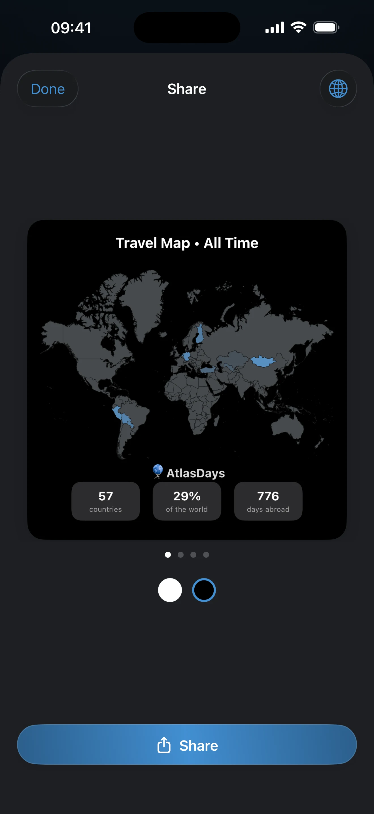

Dashboard and Map
Check what the dashboard is summarizing, what the selected period changes, and why totals or map highlights can look wrong.
What This Page Helps You Do
Use this page when totals, map highlights, or period filters do not match what you expected, and you need to work out whether the issue is in the dashboard or in the trip record behind it.
- what the selected Year, All Time, or Range actually changes
- why Days Abroad, countries, trips, and tracker cards do not all answer the same question
- when the right fix is in the trip record or settings instead of on the dashboard
When the Dashboard Looks Wrong
Most dashboard confusion comes from a small number of causes. Check these first before assuming the math is broken:
- Selected period: the current Year, All Time, or Range changes every stat, the map, the detail sheets, and the share cards.
- Current trip record: the dashboard summarizes the trip record you have now. It is not reading from a separate hidden data layer.
- Transit: Transit can still appear on the map or in country details, but it does not count as a visited stay and adds 0 days.
- ongoing trips: an ongoing trip uses today as its effective end date, so totals keep moving until you close it.
- Same-day crossings: one date can legitimately belong to two countries if you left one and entered another on the same day. That can make countries and trips move in a way that feels surprising.
- Trip precision: Exact Dates drive precise day totals. Year and Unknown preserve history, but narrower filters cannot always place them.
- Record quality: if the trip record is messy, duplicated, overlapping, or wrongly marked as Transit, the dashboard will look messy too.
What the Dashboard Is For
The dashboard turns your current trip record into a period-based summary. It helps you answer questions like how many countries you visited in a period, how many unique days you were abroad, and how that record looks on the map.
The dashboard summarizes the record you already have. If the number looks wrong, first check the selected period and the trip entries behind it.
The Main Dashboard Stats
The four stat tiles at the top are tappable, and each one opens the trips or country rows behind the number.
- Countries: how many distinct visited countries fall inside the selected period. The denominator depends on your visited-country counting mode in Settings: UN 195, UN 195+2, or All Places. Transit-only countries appear separately on the map, but they do not count as visited countries.
- Trips: how many non-Transit trips fall inside the selected period. All Time can include trips stored as Year or Unknown. A specific Year can include matching Year entries. Range is the strictest view and focuses on trips that can be placed inside that exact window.
- Days Abroad: total unique exact days outside your Home Country in the selected period. If you chose No fixed residence, all recorded days from Exact Dates trips count as abroad. This is not the same thing as tracker days, because trackers use their own country scope, time window, and optional night counting.
- Continents: how many continents are represented by the visited countries in the selected period. If countries drop out because of the current period or counting mode, continents can change too.
Trackers on the Dashboard
If you have trackers set up, they appear as cards below the stats. Each card shows the tracker name, current total, threshold, and progress state.
Those cards use the same underlying trip record, but not the same question as Days Abroad. A tracker can use a different country scope, a rolling or stay-based window, and either day or night counting, so its number does not need to match the dashboard total.
You can reorder tracker cards by dragging, and collapse or expand the whole tracker section. If the tracker logic itself looks wrong, use Trackers and Limits.
Changing the Period
The selected period changes what appears everywhere on the dashboard. When you switch periods, you are not changing one tile. You are changing the whole summary.
Year mode lets you pick a specific year or All Time. Range mode lets you choose a window like the last 7, 30, 90, 180, or 365 days, or set a manual start and end date. Use Year when the question is about a calendar year. Use Range when the question is about a rolling or custom window.
Approximate trips do not behave the same way in every period:
- All Time can show trips saved as Year or Unknown.
- A specific Year can show matching Year entries.
- Range is best for Exact Dates analysis. A Year entry appears there only when the selected range fully covers that year. Unknown entries do not land inside a specific Year or Range.
If countries, trips, or totals appear or disappear after switching filters, verify the selected period before assuming the dashboard lost data.

Using the Map
The dashboard shows a mini world map. Tapping it opens the full-screen interactive map where you can tap any country to inspect the trips behind that highlight.
The map reflects the selected period and the same trip record behind the stats. It is a visualization of that record, not a separate calculation layer.
Visited countries are highlighted in your chosen accent color. Transit places appear differently so you can tell them apart from entered-country visits. Very small countries like Vatican City, Singapore, and Malta can appear as dot markers because their territory is too small to see reliably at map scale.
If the map changes when you switch from 2024 to All Time, that is expected. The map follows the current filter exactly.
If a country highlight looks wrong, tap it. The detail sheet shows the trips behind that country, including Transit badges and exact day counts where available.
How Day Counting Works
AtlasDays counts both the arrival day and the departure day. A trip from January 1 to January 3 is 3 days, not 2.
Shared dates from Exact Dates trips are not double-counted in unique dashboard day totals. If you have overlapping trips, or a legitimate same-day border crossing, one calendar date still counts once toward Days Abroad. An ongoing trip uses today as the effective end date until you close it.
That is why some results can feel unintuitive while still being correct. Two same-day border crossings can increase Trips or the country list, while Days Abroad only moves by one unique day for that date.
It also means country-by-country day rows can add up to more than Days Abroad when the same exact date legitimately appears in two countries.
Exact Dates drive precise day totals. Year and Unknown can still preserve history and affect broader summaries, but they do not create exact day math.
When to Fix the Record Instead
The right fix is in the record or settings, not on the dashboard, when any of these are true:
- a trip is saved as Year or Unknown when you actually know the Exact Dates
- Transit is marked incorrectly
- there are duplicate or overlapping entries
- an ongoing trip should already be closed
- Home Country is wrong, so Days Abroad is solving the wrong question
- a recent crossing never became a trip because Auto-Detect Trips was delayed, missed, or not reviewed
If one of those applies, clean up the trip record first. The dashboard will update from that record.
Share Cards
AtlasDays can generate shareable cards from your dashboard data, including a map snapshot and your key stats. You can swipe through a carousel of card styles and toggle each card between light and dark appearance independently from your system theme. Save to Photos or share directly.
The cards are rendered from your actual trip data for the selected period. If the card looks wrong, the thing to verify is still the selected period and the trip record behind the dashboard.

Where to go next
Trip Modes and Record Quality explains how Exact Dates, Year, Unknown, Transit, duplicates, overlaps, and ongoing trips affect the record behind the dashboard.
Trackers and Limits explains why a tracker total can differ from Days Abroad or other dashboard summaries.
Export and Reports helps you inspect the selected period outside the dashboard when you want a file-based review.
Getting Started is the right next page if your Home Country or counting preferences were never set up clearly.
Privacy, Location, and Sync is relevant when a recent trip is missing because Auto-Detect Trips, notification permission, or local device behavior did not work as expected.